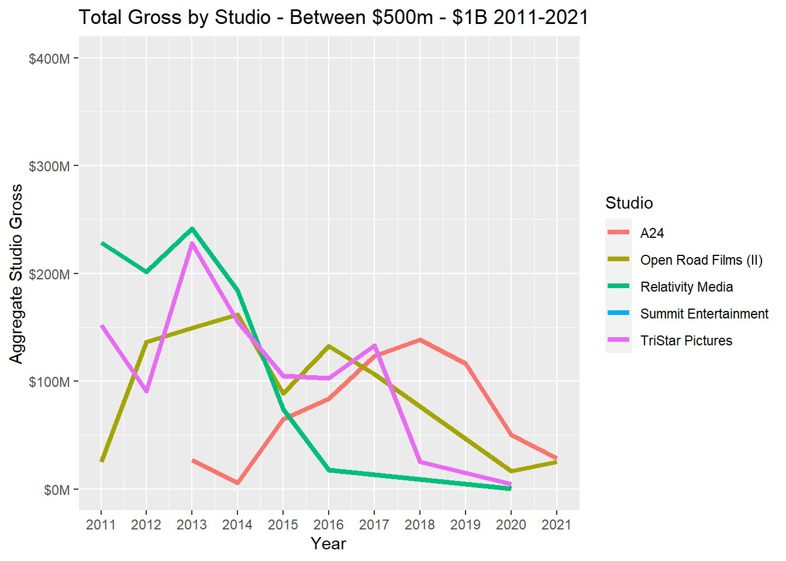
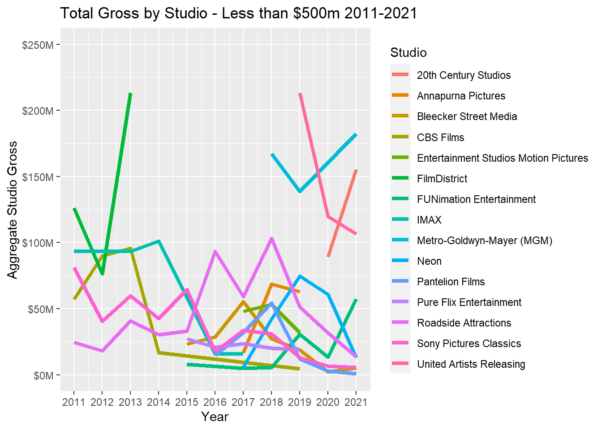
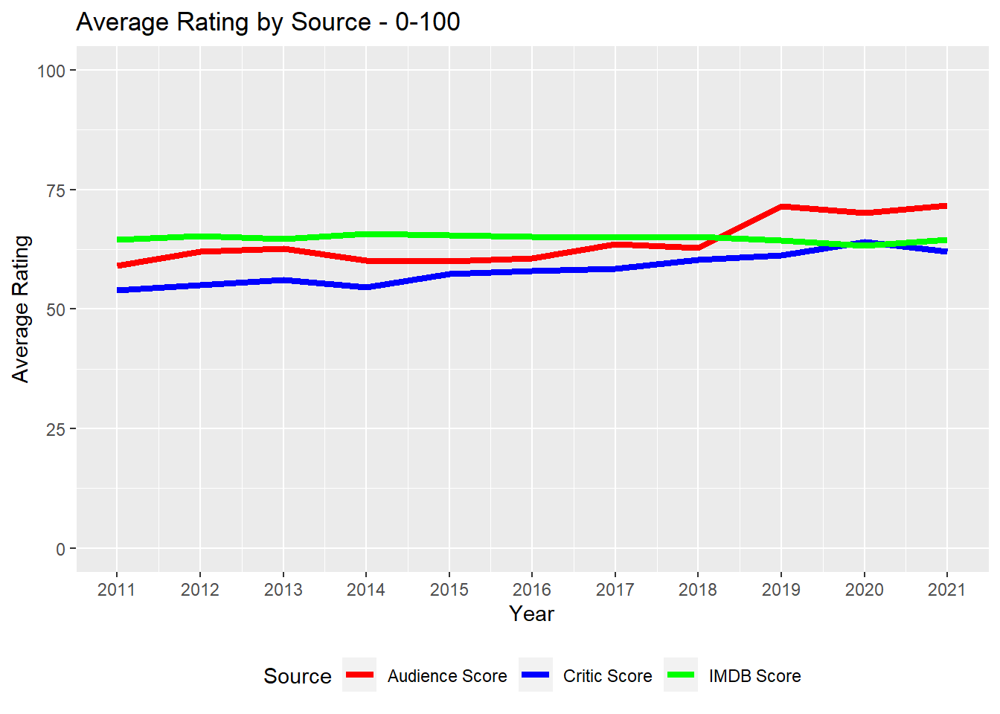

Chapter 4 Missing Values
Here, The three chart shows us in which row do we have missing values. Like from the first bar chart, we can see that we are missing more than 750 rows of data in the Genre_3 or G_3 column. Using this data gives us a bit of an idea on how to proceed with further analysis.

Here, we can see where in our dataset do we have na values or the missing values, which columns have more missing data.This tile visualization provides us with a concrete idea of the placement of the missing values. Example: We can see that there are a lot of movies with Genre_3 which are missing some values. Here we only took the data from 100-200. Just to show the example, and the visualization better.

4.1 Looking For Missing Data In The Ratings: IMDB, Score_Audience and Score_Rotten
Here, we created three extra columns to check whether we had any missing ratings or scores abd populated them with 1 and 0. 1 for True they are missing and 0 for false they are not. We can see that in our dataset, we had 150 missing IMDB ratings for our movies, and about 110 values for our audience score, and the total missing values for score_ratings were about 260.
